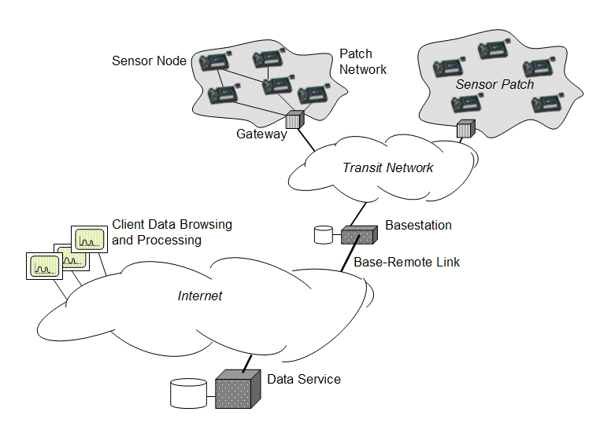
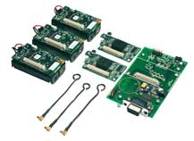

Υλοποίηση πληροφοριακών συστημάτων — Απαλλακτική Εργασία
Υλοποίηση συστήματος παρακολούθησης κλίματος με ασύρματους αισθητήρες
Οι ασύρματοι αισθητήρες είναι υπολογιστές με περιορισμένες δυνατότητες επεξεργασίας
και αποθήκευσης, οι οποίοι έχουν την δυνατότητα να συλλέγουν δεδομένα από το
περιβάλλον τους και να τα μεταδίδουν ασύρματα σε κάποιο κεντρικό σταθμό βάσης.

Λόγω του χαμηλού τους, σχετικά, κόστους και του μικρού τους μεγέθους, χρησιμοποιούνται
σε εφαρμογές συλλογής δεδομένων σε εχθρικά, για τον άνθρωπο,
περιβάλλοντα.
Τι θα βρείτε
- Smart Dust Micro Sensors Hardware Kit & SDK

- Λειτουργικό σύστημα για τους ασύρματους αισθητήρες
- Όλο το απαραίτητο λογισμικό για την ανάπτυξη της εφαρμογής
Τι θα φτιάξετε
- Εγκατάσταση του λειτουργικού συστήματος TinyOS στους ασύρματους αισθητήρες
- Δημιουργία ασύρματου δικτύου
- Δημιουργία εφαρμογής συλλογής, επεξεργασίας και παρουσίασης δεδομένων από τους αισθητήρες
Τι πρέπει να ξέρετε
- Εγκατάσταση και χρήση κάποιου Λ/Σ εκτός Windows (Linux, FreeBSD)
- Κάποια γλώσσα προγραμματισμού για το διαδίκτυο (PHP, Perl,...)
Τι θα μάθετε
- Γνωριμία με την τεχνολογία των δικτύων αισθητήρων
- Επικοινωνία σε χαμηλό επίπεδο με συσκευές
- Εμβάθυνση στην ανάπτυξη εφαρμογών με τη χρήση μοντέρνων τεχνικών τεχνολογίας λογισμικού
Υπεύθυνος εργασίας
- Όνομα
- Γιώργος Γούσιος
- Email
- gousiosg@aueb.gr
- Ιστοσελίδα
- http://istlab.dmst.aueb.gr/~george
Παραπομπές στο διαδίκτυο